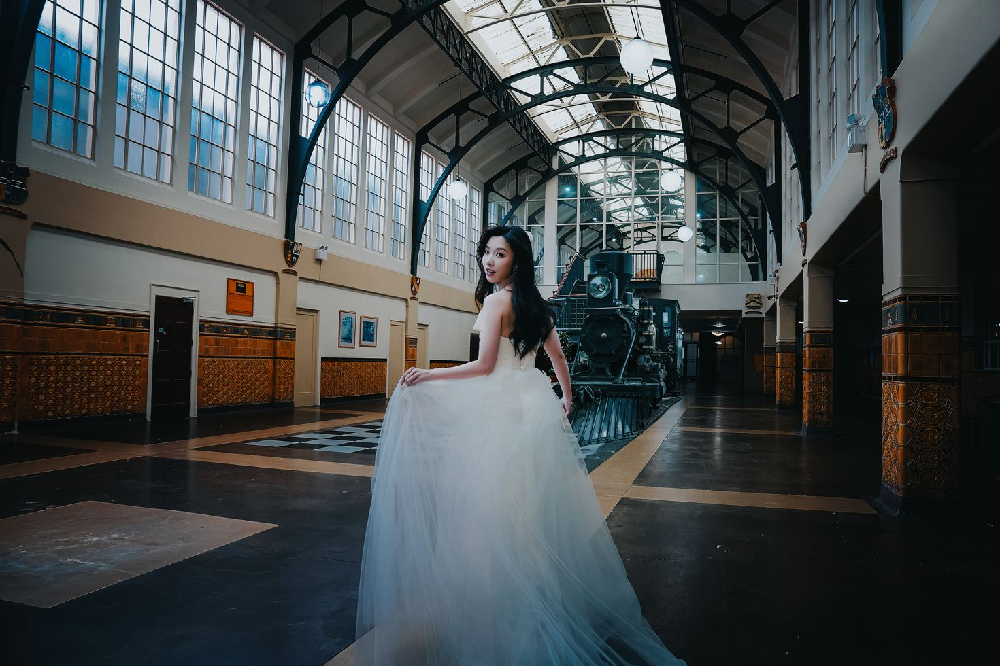
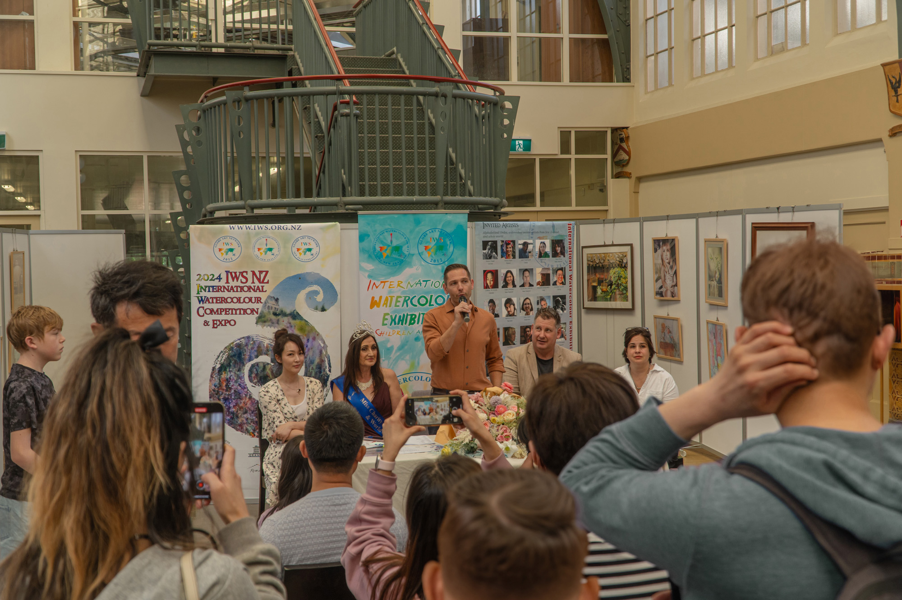
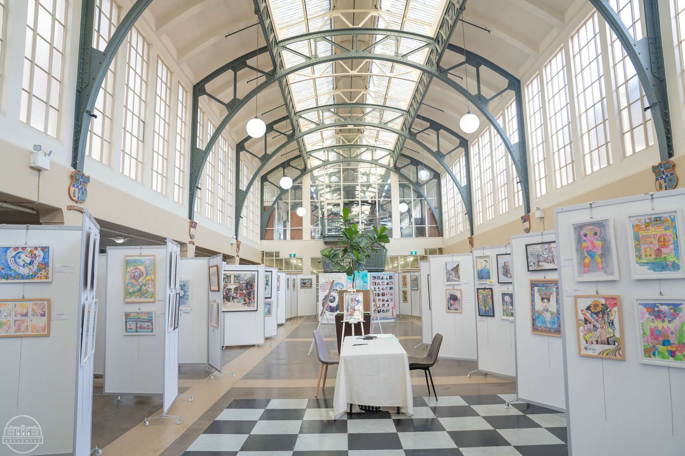
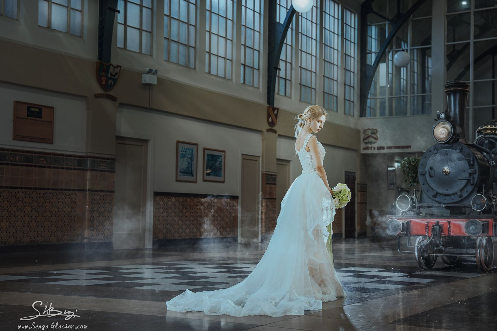
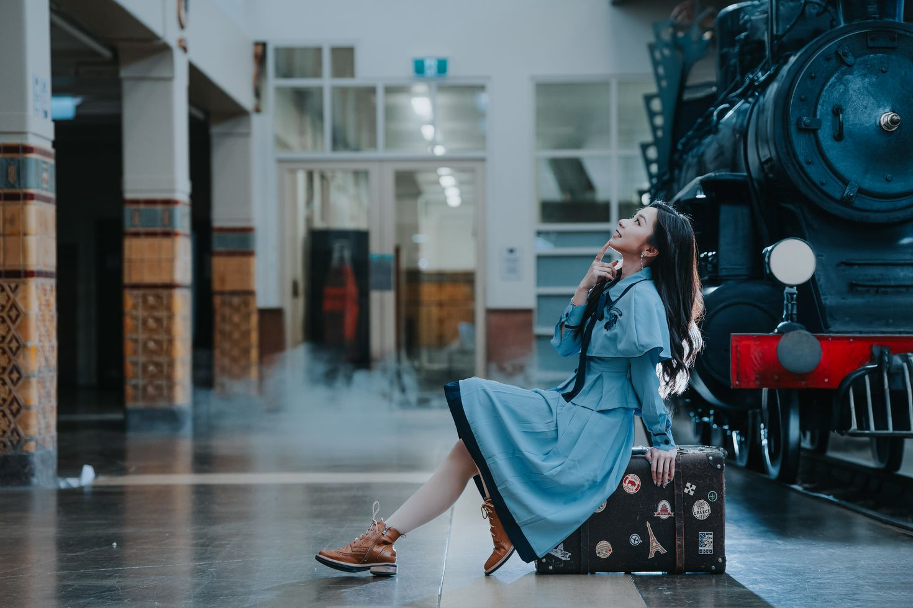
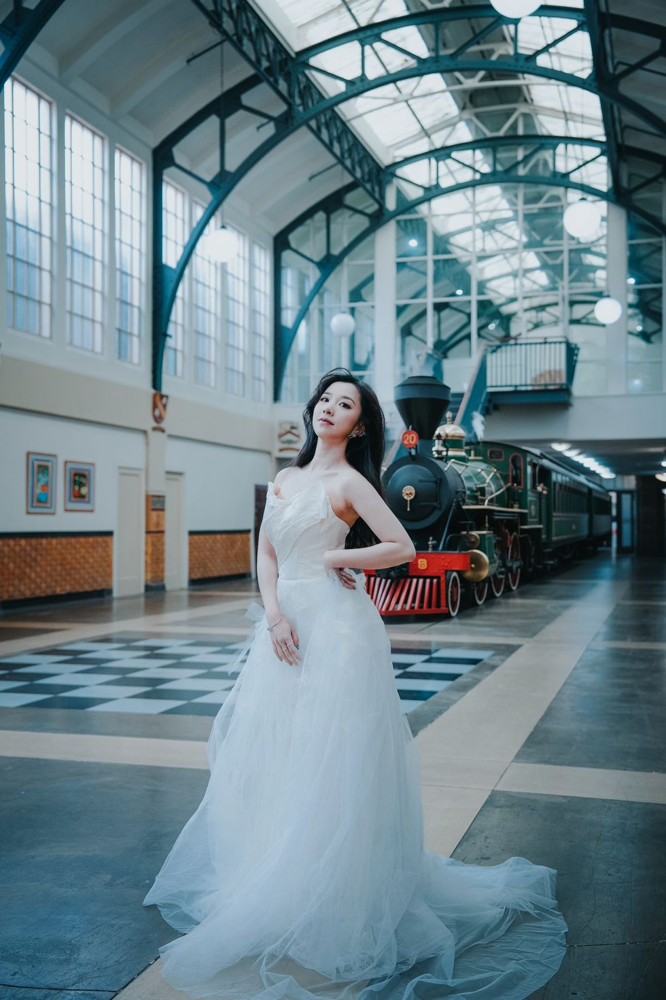

Space for ceremonies, performances and exhibitions
Cathedral-height ceilings, grand arched windows and abundant natural light give the Grand Hall its remarkable scale. Original heritage detailing and strong acoustics make it a memorable setting without needing to disguise the building itself.
The hall also carries an international screen legacy as a filming location for Merry Christmas, Mr. Lawrence.
Gather, perform, exhibit
- Wedding ceremonies and receptions
- Concerts, cultural events and galas
- Art exhibitions and private celebrations
- Fashion, editorial and commercial shoots
- Film and screen production
Grand architecture from every angle



More photographs



See how your event could take shape
Share your preferred date, guest numbers and event requirements with the venue team.
Choose Gmail or your email app to prepare a message. Nothing is sent until you press Send.